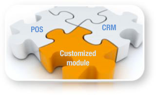

Most modern currency exchange offices advertize their rates on currency exchange boards. These boards are normally very expensive and limited in functionality. Clear View Systems has developed specific modules that can communicate with colour LCD panels at a fraction of the price of a currency rate board. The digital rate board gets its feed directly from CurrencyXchanger, so you don't have to worry about updating the rates on the panel ever.
Even though CurrencyXchanger is an off-the-shelf currency exchange software, it can still be customized to fit specific requirements. Developing a customized currency exchange software from scratch can be very costly and time consuming. Many small exchange places think of developing in-house solutions by hiring local software developers, which usually ends up with unfinished costly product.
Clear View System can help you with your specific needs by customizing the core tested engine of CurrencyXchanger. We can use our currency exchange software to add-to or modify several standard financial reports or to develop custom financial reports and queries.
if you are in a rush and want to save time, our custom reporting service provides a cost effective alternative to help you get the job done quickly: Our team will work with you to design and build custom reports and queries to your exact specifications.
Ove the years, we have successfuly developed and deployed over 50 customization projects. We offer fixed price and hourly rates for customization projects. In fact, our hourly rates are one of the most affordable rates in North America.

La plupart des bureaux de change modernes annoncent leurs taux sur les bureaux de change. Ces cartes sont normalement très chères et leurs fonctionnalités sont limitées. Clear View Systems a développé des modules spécifiques qui peuvent communiquer avec des panneaux LCD couleur à une fraction du prix d'un tableau de taux de change. Le tableau des taux numériques reçoit son flux directement de CurrencyXchanger, vous n'avez donc pas à vous soucier de la mise à jour des taux sur le panneau.
Voir des exemples de notre tableau des taux de change numériques
Même si CurrencyXchanger est un logiciel de change standard, il peut toujours être personnalisé pour répondre à des besoins spécifiques. Développer un logiciel de change personnalisé à partir de zéro peut être très coûteux et prendre beaucoup de temps. De nombreuses petites places d'échange pensent à développer des solutions internes en embauchant des développeurs de logiciels locaux, ce qui aboutit généralement à un produit coûteux inachevé.
Clear View System kann Ihnen bei Ihren spezifischen Anforderungen helfen, indem es die kerngetestete Engine von CurrencyXchanger anpasst. Wir können unsere Währungsumrechnungssoftware verwenden, um mehrere Standardfinanzberichte zu ergänzen oder zu modifizieren oder um benutzerdefinierte Finanzberichte und Abfragen zu entwickeln.
Wenn Sie in Eile sind und Zeit sparen möchten, bietet unser kundenspezifischer Berichtsservice eine kostengünstige Alternative, mit der Sie die Arbeit schnell erledigen können: Unser Team arbeitet mit Ihnen zusammen, um benutzerdefinierte Berichte und Abfragen nach Ihren genauen zu Spezifikationen zu Spezifikationen
Im Laufe der Jahre haben wir über 50 Anpassungsprojekte erfolgreich entwickelt und eingesetzt. Wir bieten Festpreise und Stundensätze für Anpassungsprojekte an. Tatsächlich gehören unsere Stundensätze zu den günstigsten in Nordamerika.
La mayoría de las oficinas de cambio de divisas modernas anuncian sus tasas en las juntas de cambio de divisas. Estas placas son normalmente muy caras y tienen una funcionalidad limitada. Clear View Systems ha desarrollado módulos específicos que pueden comunicarse con paneles LCD a color a una fracción del precio de una tarjeta de cambio de moneda. El tablero de tarifas digital obtiene su alimentación directamente de CurrencyXchanger, por lo que nunca tendrá que preocuparse por actualizar las tarifas en el panel.
Aunque CurrencyXchanger es un software de cambio de divisas listo para usar, aún se puede personalizar para adaptarse a requisitos específicos. Desarrollar un software de cambio de moneda personalizado desde cero puede ser muy costoso y llevar mucho tiempo. Muchos lugares de intercambio pequeños piensan en desarrollar soluciones internas mediante la contratación de desarrolladores de software locales, lo que generalmente termina con un producto costoso sin terminar.
Clear View System kann Ihnen bei Ihren spezifischen Anforderungen helfen, indem es die kerngetestete Engine von CurrencyXchanger anpasst. Wir können unsere Währungsumrechnungssoftware verwenden, um mehrere Standardfinanzberichte zu ergänzen oder zu modifizieren oder um benutzerdefinierte Finanzberichte und Abfragen zu entwickeln.
Wenn Sie in Eile sind und Zeit sparen möchten, bietet unser kundenspezifischer Berichtsservice eine kostengünstige Alternative, mit der Sie die Arbeit schnell erledigen können: Unser Team arbeitet mit Ihnen zusammen, um benutzerdefinierte Berichte und Abfragen nach Ihren genauen Spezifikationen Spezifikationen um
Im Laufe der Jahre haben wir über 50 Anpassungsprojekte erfolgreich entwickelt und eingesetzt. Wir bieten Festpreise und Stundensätze für Anpassungsprojekte an. Tatsächlich gehören unsere Stundensätze zu den günstigsten in Nordamerika.
Die meisten modernen Wechselstuben veröffentlichen ihre Kurse auf Wechselstuben. Diese Platinen sind normalerweise sehr teuer und in ihrer Funktionalität eingeschränkt. Clear View Systems hat spezielle Module entwickelt, die mit Farb-LCD-Panels zu einem Bruchteil des Preises einer Währungstafel kommunizieren können. Das digitale Kursboard erhält seinen Feed direkt von CurrencyXchanger, sodass Sie sich nie um die Aktualisierung der Kurse im Panel kümmern müssen.
DE- View Sehen Sie sich Beispiele unseres Digital Currency Rate Board an
Obwohl CurrencyXchanger eine handelsübliche Währungsumtauschsoftware ist, kann sie dennoch an spezifische Anforderungen angepasst werden. Die Entwicklung einer maßgeschneiderten Währungsumrechnungssoftware von Grund auf kann sehr kostspielig und zeitaufwändig sein. Viele kleine Austauschstellen denken daran, eigene Lösungen zu entwickeln, indem sie lokale Softwareentwickler einstellen, was normalerweise zu einem unfertigen, kostspieligen Produkt führt.
Clear View System kann Ihnen bei Ihren spezifischen Anforderungen helfen, indem es die kerngetestete Engine von CurrencyXchanger anpasst. Wir können unsere Währungsumrechnungssoftware verwenden, um mehrere Standardfinanzberichte zu ergänzen oder zu modifizieren oder um benutzerdefinierte Finanzberichte und Abfragen zu entwickeln.
Wenn Sie in Eile sind und Zeit sparen möchten, bietet unser kundenspezifischer Berichtsservice eine kostengünstige Alternative, mit der Sie die Arbeit schnell erledigen können: Unser Team arbeitet mit Ihnen zusammen, um benutzerdefinierte Berichte und Abfragen nach Ihren genauen Spezifikationen zu entwerfen und zu erstellen.
Im Laufe der Jahre haben wir über 50 Anpassungsprojekte erfolgreich entwickelt und eingesetzt. Wir bieten Festpreise und Stundensätze für Anpassungsprojekte an. Tatsächlich gehören unsere Stundensätze zu den künftign in Nordamerika.